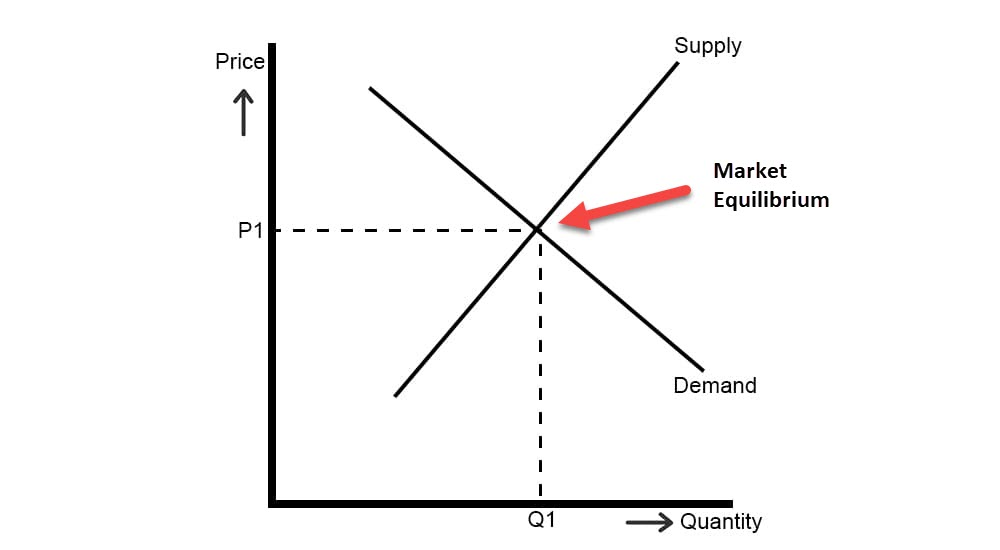

| 💙 Lesson — Market Equilibrium |

Ano ang Market Equilibrium?
Ang Market Equilibrium ay ang punto kung saan ang demand ng mamimili at supply ng prodyuser ay nagtatagpo sa iisang presyo. Dito nabubuo ang tinatawag na Equilibrium Price o presyong napapagsunduan ng mamimili at prodyuser.
Kung saan sakto lang ang dami ng produkto na kayang bilhin ng mga mamimili sa presyo na kayang ibenta ng mga prodyuser — walang sobra, walang kulang.
Key Terms
- Equilibrium Price (Presyo ng Katuwiran): Presyo na parehong tinatanggap ng mamimili at prodyuser.
- Equilibrium Quantity: Dami ng produkto na sakto sa gusto ng mamimili at kayang ibigay ng prodyuser.
- Surplus: Kapag sobra ang supply kaysa sa demand — maraming panindang hindi nabibili.
- Shortage: Kapag kulang ang supply — maraming gustong bumili pero kaunti ang produkto.
Paano Nabubuo ang Equilibrium?
Kapag mataas ang presyo, bumababa ang demand pero tumataas ang supply. Kapag naman mababa ang presyo, dumadami ang demand ngunit nababawasan ang supply. Kaya ang merkado ay kusa ring naghahanap ng balanse upang makamit ang presyong patas para sa lahat.
Surplus (Sobrang Supply)
Kapag mas mataas ang presyo kaysa sa equilibrium price, kaunti lang ang gustong bumili pero madaming produkto ang naiproduce. Para maibenta ang sobra, napipilitan ang prodyuser na ibaba ang presyo hanggang bumalik sa equilibrium.
Shortage (Kulang na Supply)
Kapag masyadong mababa ang presyo, maraming mamimili ang gustong bumili pero kaunti lang ang supply. Dahil dito, napipilitang itaas ng prodyuser ang presyo hanggang bumalik sa equilibrium point.
Real-Life Examples
- Kapag may SALE sa mall, bumababa ang presyo kaya nagkaka-shortage dahil nag-uunahan ang buyers.
- Kapag sobra ang harvest ng mangga pero kaunti ang bumibili, nagkaka-surplus kaya pinapaba ang presyo.
- Sa online shopping (Shopee/Lazada), kapag bagsak presyo, mabilis maubos ang stocks — shortage scenario.
- Kapag hype ang isang produkto tulad ng K-pop merch, tumataas presyo hanggang makahanap ulit ng equilibrium.
Bakit Mahalaga ang Equilibrium?
Mahalaga ang equilibrium sa ekonomiya dahil dito nakikita kung patas ang presyo at kung maayos ang galaw ng produkto sa merkado. Kapag wala sa equilibrium, nagkakaroon ng imbalance na nagdudulot ng shortage o surplus na nakakaapekto sa mamimili at prodyuser.